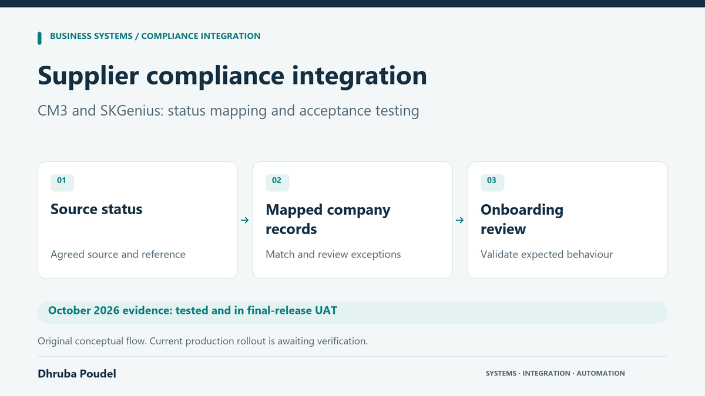

Business systems · Integration and UAT
Supplier compliance integration
Bring compliance information into the onboarding and company-record workflows where it needs to be reviewed.
- Business task
- Improve visibility of supplier compliance information across onboarding and company records.
- Integration focus
- Source references, status mapping, exception visibility and expected review behaviour.
- Public proof
- Five fictional acceptance-design cases. They are illustrations, not production test results.

Connect a compliance requirement with the operational workflow.
My SKGenius work includes maintaining integration priorities and coordinating requirements, developers, stakeholders and testing. For supplier compliance, the roadmap covers CM3 integration and validation in service-provider onboarding, company records and company details.
The documented goal is to make compliance information easier to review within SKGenius and reduce reliance on separate manual checking. The retained October 2026 update records that the integration had been tested and was in UAT for its final release.
This case focuses on application integration and acceptance. Monthly compliance dashboards and board reporting are separate reporting deliverables.
Make the source status and the matching record clear.
A useful integration must connect a source reference with the intended company record, map the returned status to agreed labels and expose records that need attention. A missing lookup, ambiguous match or stale result must remain understandable to the reviewer.
The public diagram explains these decisions at a generic level. It does not reproduce private fields, live API contracts, supplier identities or internal eligibility rules.
The examples below are newly created fictional cases showing how I reason about status mapping and review. They are not live SKG rules and have not been executed against production.
Define expected behaviour for ordinary and uncertain results.
| Input condition | Expected handling to agree and test | Review evidence |
|---|---|---|
| SC-01 · Current compliant status | Map the returned value to the agreed compliance label. | Matched source reference and source/as-of information remain visible for acceptance. |
| SC-02 · Non-compliant status | Surface the status in the review workflow. The responsible reviewer applies the agreed onboarding policy. | The integration result and the separate review decision remain distinguishable. |
| SC-03 · No matching supplier | Create an unmapped exception for investigation. | An unmatched record is not silently treated as compliant. |
| SC-04 · Unavailable or stale result | Show unavailable/stale status using an agreed freshness rule. | Retain the last-known source timestamp and indicate that a current result is pending. |
| SC-05 · Ambiguous duplicate match | Hold the mapping for review before applying a status. | Show the ambiguity and the reason for the eventual mapping decision. |
These cases are intended to support an acceptance discussion: what should the integration return, what should the interface show, and what action belongs to the reviewer? They do not make automated eligibility decisions.
Keep testing evidence separate from rollout status.
- Recorded scope
- CM3 integration and testing, including validation in supplier onboarding and company-record views.
- October 2026 record
- The integration was described as tested and in UAT for final release.
- Current production status
- No newer release-acceptance confirmation was located in this review. Production rollout remains awaiting verification.
- Public examples
- The five cases above are fictional acceptance-design examples, with no live supplier records or production results.
A future update can attach the accepted release scope, an anonymised result summary and the agreed operating handover once those are verified. This page records the contribution and the delivery stage supported by the available evidence.